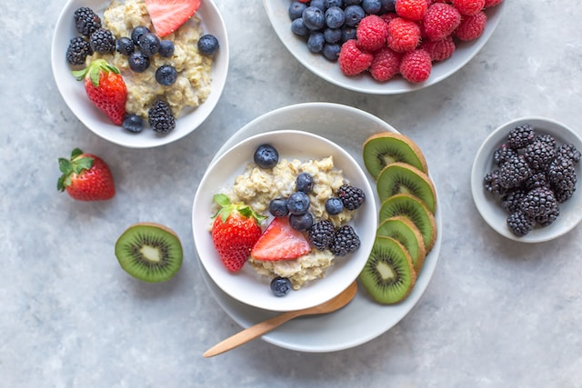

The Moderately Exciting Breakfast

The Moderately Exciting Breakfast
Are you chasing a breakfast of simplicity, but also hear
the calling of your adventurous side?
Look no further! The boring porridge is for you.
Enjoy the moderately exciting taste of oats, lime and fruit/nuts...
Ingredients
- 100 gr rolled oats
- 1 medium sized banana
- Some hot water
- A splash of lime juice
- A handful of fruit and/or nuts
Steps
- Boil some water in the kettle.
- Mash a banana in a bowl with a fork, then
pour the rolled oats over the banana mash.
- Pour the hot water into the bowl.
- Mix everything until the desired consistency is reached.
Add a splash of lime juice while mixing.
- Throw some fruit and/or nuts on top.